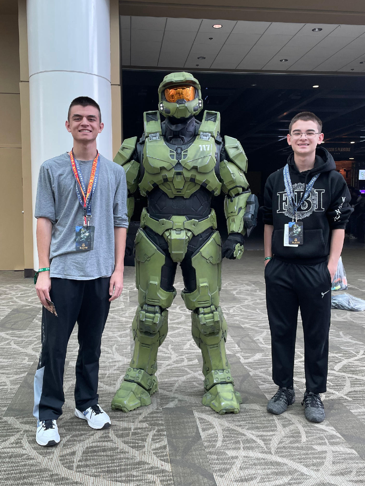

Magic Squirrel Games
Magic Squirrel Games is an indie game publishing and development company run by game developer and enthusiast Evan Yang.
The Magic Squirrel Games YouTube channel was started in March of 2024, and the the official website was launched in November of the same year.

Games published by Magic Squirrel Games are typically made in Unity and coded in C#, and will be released onto a variety of platforms, including Android and iOS, PC, and consoles.
Our goal is to create fun and simple games that bring the best out of gaming: entertaining, memorable games with create mechanics and unique art styles.

The name, Magic Squirrel Games, is based on the gamertag created by Evan at a young age, which itself is based upon the "magic squirrels" in children's book series "Origami Yoda". The name "Magic Squirrel" was already taken, so two zeroes were placed in between the two words to create the username "magic00squirrel".
This name is the one curently used by Evan's personal YouTube channel and was adapted and modified to create the name under which his games would be published. Thus Magic Squirrel Games was born.
Evan
Evan Yang is an indie game developer and avid video game enthusiast.
Evan began his programming journey in elementary school, making games in the online, block based coding tool, Scratch. In middle school, Evan started to make games in the Unity game engine and learn C#. Evan is currently studying software engineering at Green River Community College and has taken classes on Python, Java, HTML, CSS, and Javascript.
Evan starting making games in Unity thanks to tutorials by the YouTube channel Brackeys. Other big inspirations for him include YouTubers videogamedunkey, Game Maker's Toolkit, Miziziziz, and Dani, as well as indie game developer David Szimanski, Doom Eternal creative director Hugo Martin, and game development studio Team Cherry.
Evan's favorite game and biggest inspiration is Team Cherry's Hollow Knight. He also loves franchises like DOOM, Resident Evil, Halo, and Half-Life. Some of his other favorite games include Counter-Strike, Dusk, Celeste, Ultrakill, and Terraria.
Other hobbies of Evan include video production, shooting, art and animation, 3D printing, and collecting transformers action figures. He also loves his cockatoo, Vinny.